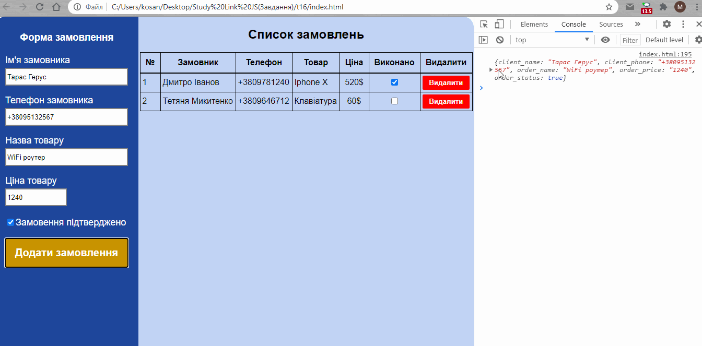
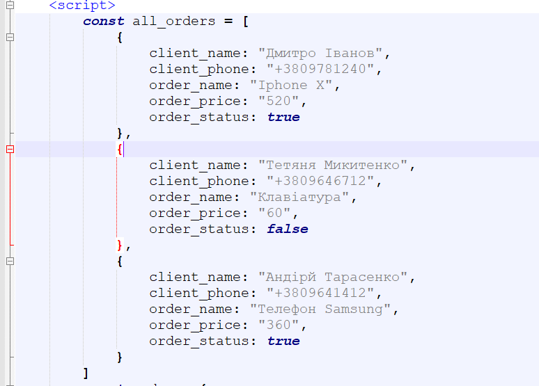
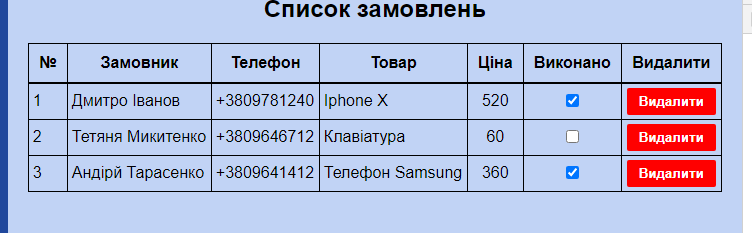
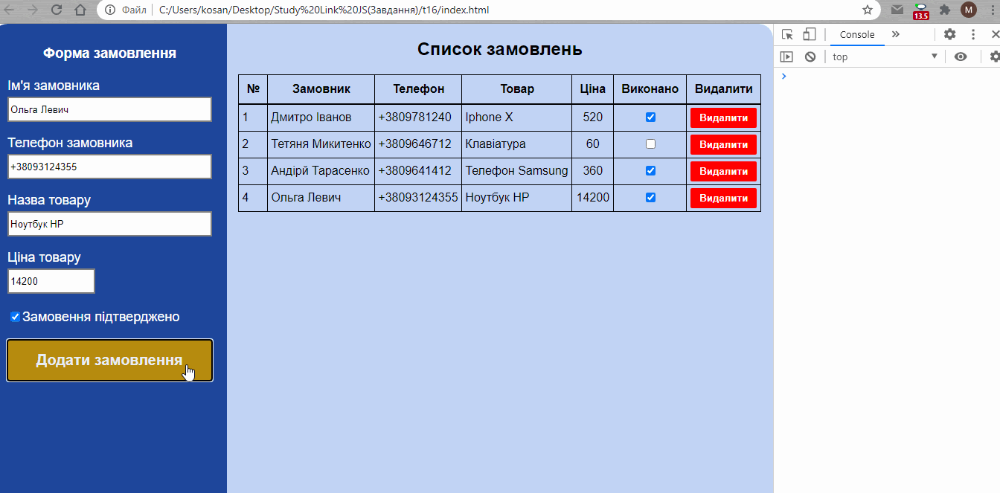
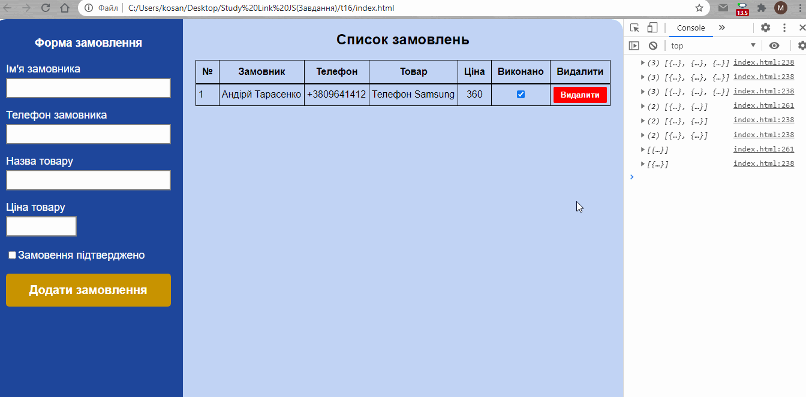

Тема 16.
1. Використайте готову верстку html та стилі css. Створіть функцію addOrder() яка буде зчитувати поля з форми. Збережіть їх в окремий об'єкт та виведіть його у консоль.

2. Створіть масив у якому будуть зберігатися всі замовлення. Викристайте в якості початкового масиву цей.

3. Створіть функцію drawOrders() яка буде додавати усі замовлення у таблицю.

4. Змініть створену функцію addOrder() яка буде додавати нове замовлення у масив з усіма замовленнями, а потім повторно відображатиме їх у таблиці.

5. Створіть функцію delOrder() яка буде вилати замовлення із масиву з усіма замовленнями, а потім повторно відображатиме їх у таблиці.
